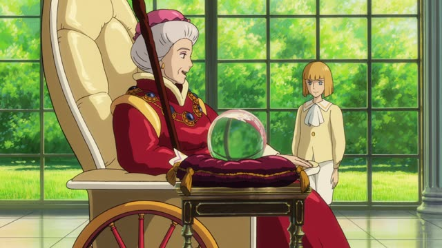
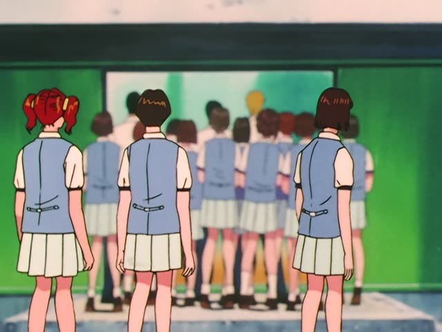
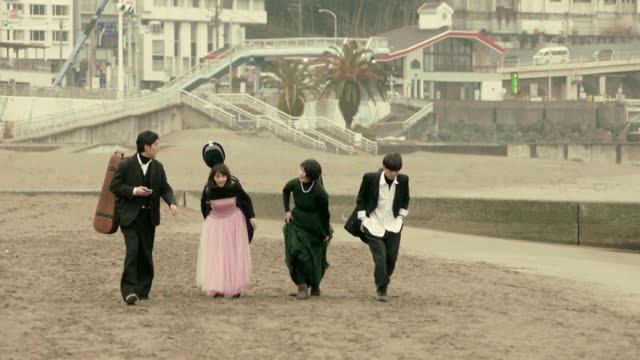
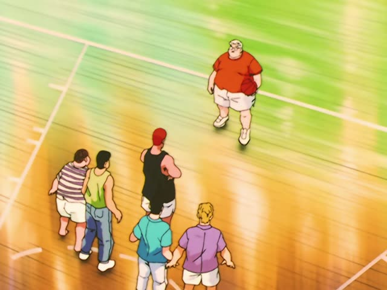
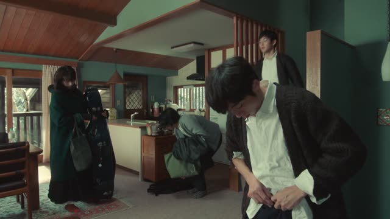
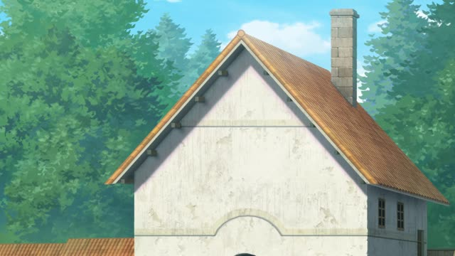

～ましょう
| Polite | ～ましょう |
|---|---|
| Casual | ～よう る-verbs: drop る ～おう う-verbs: u sound → o |
Same meaning: "let's". Only the politeness changes.

Howl's Moving Castle
このばかげた戦争を終わらせましょう。
"Let's put an end to this stupid war."
ましょう means let's: you suggest doing something, and you're doing it too.
Take the ます form and swap ます for ましょう: 終わらせます → 終わらせましょう. On this card, it answers "what do we do now?": stop the war.

Shirokuma Cafe · Episode 14
次はかき氷食べよう。
"Next, let's have shaved ice."
Casual: る-verbs swap る for よう (食べる → 食べよう). う-verbs turn the last u sound into o and add う (行く → 行こう). する → しよう, 来る → こよう.
Quick Examples
You and a friend walk past a ramen shop, both starving.
ラーメン食べよう！
"Let's get ramen!"
食べる is a る-verb: る → よう.
CasualA meeting runs late. You look at your coworkers.
そろそろ帰りましょう。
"Let's call it a day."
帰ります → 帰りましょう. そろそろ = "about time".
PoliteIt starts pouring and the station is far.
タクシーで帰ろう。
"Let's take a taxi home."
帰る is a う-verb, so the last sound る (ru) turns into ろ (ro) + う.
CasualThe teacher walks into class.
じゃあ、始めましょう。
"Okay, let's begin."
始めます → 始めましょう.
PoliteHalfway up a hill, your friend is out of breath.
ちょっと休もう。
"Let's rest a bit."
休む → む (mu) turns into も (mo) + う.
CasualWith and without
公園に行きます。
"I'm going to the park." Just telling them your plan.
公園に行きましょう。
"Let's go to the park." You're inviting them to come along.
Examples from Media
Midnight Diner: Tokyo Stories · Season 2, Episode 9
じゃ、やりましょう。
"Okay, let's do it."
やります → やりましょう. じゃ = "okay then".

Slam Dunk · Episode 89
帰りましょう。
"Let's go home."
帰る ("go home") → 帰りましょう = "let's go home".

Sakamoto Days · Season 1
坂本さん、あの女、クビにしましょう。
"Mr. Sakamoto, let's fire that woman."
クビにする ("to fire someone") → クビにしましょう = "let's fire her". Calling her あの女 is rude, but the ending is still polite.

Quartet · Episode 10
走りましょう。
"Let's run."
走る → 走ります → 走りましょう.

Slam Dunk · Episode 93
さあ 始めましょう。
"Well then, let's begin."

Quartet · Episode 3
お待たせしました 行きましょう
"Sorry to keep you waiting. Let's go."
行きます → 行きましょう: "let's go".

Dungeon Meshi · Episode 21
急ぎましょう。
"Let's hurry."

Shirokuma Cafe · Episode 3
シロクマくんの野性が呼び覚まされないうちに、早く行こうよ。
"Let's get going before Polar Bear's wild side wakes up."
行く → 行こう. The よ adds a push: "come on".
Further Reading
A Dictionary of Basic Japanese Grammar
Entry "~mashō" · pp. 240–243
Tae Kim's Guide to Japanese Grammar
Desire and Suggestions · The volitional form (polite)
Desire and Suggestions · The volitional form (casual)